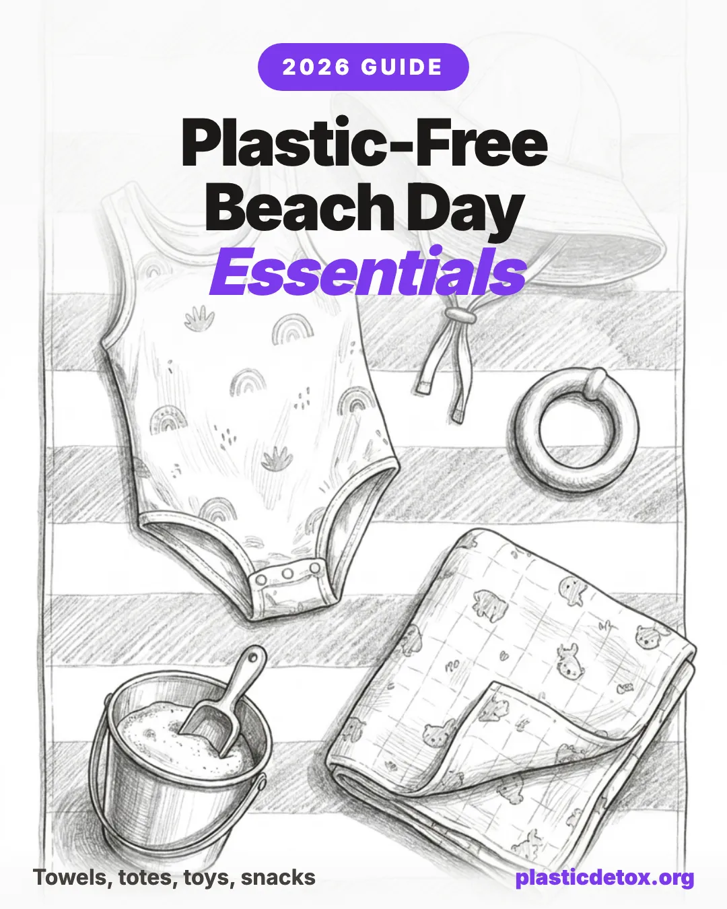

Plastic Free Beach Day Essentials: A Comprehensive Guide (2026)

The 30 Second Summary
- The average beach day is a plastic hotspot. Synthetic towels, polyester swimwear, foam boogie boards, and PVC inflatables shed microplastic fibers continuously under heat, salt, and UV.
- Skip microfiber and sand free blankets entirely. Both are 100% polyester. A 100% cotton Turkish towel (peshtemal) is the best balance of price, packability, and durability.
- Best towel for adults: Bazaar Anatolia Turkish Peshtemal. 100% cotton diamond flatweave, 71x39 inches, packs small and dries fast.
- Best towel for kids: Natemia Organic Hooded Poncho. GOTS certified organic cotton in a hooded poncho cut that doubles as a changing cover.
- Best stainless cooler for most: Stanley Adventure Cooler. A truly zero plastic cooler does not exist at consumer prices, so optimize for food safe interior and decade long lifespan.
- Best beach toys: Green Toys Sand Play Set (recycled HDPE), CaaOcho natural rubber ball, and a PlanToys wooden sailboat. Avoid dollar store plastic shovels, foam boogie boards, and PVC inflatables.
- Best swimwear is natural fiber. The market is small and pieces still include 2 to 5% elastane for stretch, but it sheds far less than 100% polyester. Top picks: Industry of All Nations organic cotton boardshorts for men, Natasha Tonic hemp pieces for women, and Primary organic cotton coverage for kids. For sunscreen, see our mineral sunscreen guide.
- What is not worth stressing about: the polyester swimsuit you already own, the cooler liner, an occasional plastic wrapped snack. Meaningful reduction beats unattainable purity, and stress about microplastics is its own health issue.
The average beach day involves an astonishing amount of plastic. The towel under you. The umbrella over you. The sunscreen on your skin. The snacks in your bag. Even the sand itself, which now contains microplastic fragments and fibers on virtually every coastline that has been studied. None of this is reason to skip the beach. But it is a useful frame for thinking about what to bring, what to skip, and what is genuinely worth caring about.
This guide covers gear, toys, food storage, and clothing for a lower plastic beach day. It does not cover sunscreen filters in detail, since that has its own dedicated article. Throughout, the goal is meaningful reduction, not unattainable purity. A perfect plastic free beach day does not exist. A noticeably better beach day does, and most of the upgrades pay you back over many summers.
Why Beach Days Are a Hidden Plastic Hotspot
Most plastic exposure conversations focus on food and indoor air. Beach days deserve their own category because the conditions are uniquely harsh on synthetic materials and uniquely good at moving microplastics from your gear into your body and the ocean.
- Heat plus UV plus sand abrasion accelerates microplastic shedding. Synthetic textiles, foam boards, and inflatables all shed faster on a hot bright beach than they ever do at home. The same towel that loses one milligram of microfiber per wash in your laundry can lose ten times that under five hours of sun and sand abrasion.
- Salt water and friction on synthetic swimwear release fibers directly into the ocean. Polyester swimwear is the single most efficient delivery mechanism for textile microplastics into marine environments, since the fibers come off in the water you are swimming in.
- Single use food packaging spikes on beach trips. Snacks, drinks, takeout containers, and bottled water all show up at the beach in ways they would not at home, both because of the social context and because of heat (people grab packaged drinks instead of room temperature reusables).
- Heat accelerates leaching from any plastic in food contact. A plastic water bottle in a hot car for three hours leaches more BPA, antimony, and phthalates than the same bottle on a kitchen counter. Stainless and glass are not just preference at the beach. They are a meaningful safety upgrade in heat.
- Dermal contact and inhalation are unusually high. Bare skin on a synthetic towel for hours, breathing the air around plastic gear baking in the sun, and ingesting microplastics from food in plastic containers warmed by the sand all stack up in a way that does not happen on a typical day.
Microplastics in the Sand: A Quick Reality Check
Studies have documented microplastic contamination in coastal sand on every beach where researchers have looked, from remote Pacific atolls with zero permanent population to the most heavily used Mediterranean and Atlantic beaches. The contamination ranges from a few hundred particles per kilogram of sand on remote beaches to tens of thousands of particles per kilogram on heavily polluted beaches near major cities.
Most of the plastic in sand is not from beach litter. The dominant sources are synthetic textile fibers transported by water and wind, weathered fragments of larger plastic debris broken down by UV and abrasion, and tire wear particles carried by stormwater runoff. Beach litter contributes, but the bigger picture is that the global microplastic load reaches even untouched coastlines.
Beach Bags and Totes
The first thing most beach guides get wrong is recommending "canvas" totes without checking the fiber content. The word "canvas" describes a weave structure, not a fiber. A canvas tote can be 100% cotton, 100% polyester, or any blend in between. The polyester ones shed microfibers under salt and abrasion exactly like any other synthetic textile.
What to Look For
- 100% natural fiber exterior. Cotton canvas, jute, seagrass, or hemp. Always flip the tag and verify, because "natural look" jute bags often have polyester or PUL linings.
- No PU or PVC coating. Many "waterproof" beach bags use a thin polyurethane or PVC coating that flakes under UV and adds plasticizers (phthalates) to anything that touches the inside.
- For wet bags, prefer waxed canvas or food grade silicone. Both are functionally water resistant without PUL coated polyester, which dominates the wet bag category.
Picks

Salt and Earth 100% Cotton Tote (Bulk Pack)
100% cotton canvas, no lining, no coating. Sold in bulk packs of 12 to 24.
View →
Frienda Handmade Straw Rattan Tote
Hand woven natural rattan and straw. Open top, unlined, no PU or PVC coating to flake in the sun.
View →
Tarvione Unlined Handwoven Straw Tote
Handwoven natural straw, bucket silhouette, unlined interior. No PU or PVC coating.
View →
Lands' End Open Top Natural Canvas Tote
24 oz heavyweight cotton canvas, X Large size, made in the USA.
View →Towels and Blankets
This is the highest impact swap in the entire guide. A microfiber beach towel is pure polyester. It sheds plastic fibers every time it gets wet, dried, or rubbed against skin. A 100% cotton towel does not. Going from microfiber to cotton on this single item probably reduces your beach day microplastic shedding more than any other change.
What to Look For
- 100% cotton on the tag, with no synthetic blend. Even 5% polyester is enough to shed continuously.
- Turkish cotton (peshtemal) is the sweet spot. Flatweave construction means fast drying, small pack size, and low fiber loss.
- Organic cotton if budget allows. The benefit here is mostly upstream (less pesticide use in growing) rather than at the towel itself.
- Skip "sand free" beach blankets. Almost all are 100% polyester or nylon with silicone backing. The sand free trick relies on the synthetic weave, which is the problem.
Towel Picks

Bazaar Anatolia Turkish Peshtemal
100% cotton, diamond flatweave, 71x39 inches.
View →
Lightweight Turkish Cotton Towel
BCI cotton, OEKO TEX Standard 100 certified, unbleached raw fringe. 36x66 inches.
View →
Natemia Organic Hooded Poncho
GOTS certified organic cotton, hooded poncho cut for kids and toddlers.
View →
Sand Cloud Organic Turkish Cotton
100% organic Turkish cotton, oversized flatweave. 10% of profits go to marine conservation.
View →Blanket Picks

Salt and Earth GOTS Organic Cotton Throw
GOTS certified 100% organic cotton, waffle weave, 55x60 inches.
View →
Loomia Turkish Cotton Blanket
100% cotton, woven Turkish construction, queen size.
View →
Toki Kids Organic Cotton Mats
100% organic cotton, heavyweight construction, machine washable.
View →Sunscreen
Skip chemical filters at the beach. Oxybenzone and octinoxate are the two ingredients banned in Hawaii and Key West for bleaching coral, and both absorb through skin into your bloodstream within hours of application. Mineral sunscreens (zinc oxide and titanium dioxide) sit on top of skin, work the moment they go on, and do not feed reefs or your endocrine system. For the full breakdown of filters, ingredients, and SPF math, see our complete mineral sunscreen guide. Below are our three top picks for a beach day specifically.
Top 3 Beach Sunscreens

Pipette SPF 50
20% non nano zinc oxide. Hypoallergenic, fragrance free, with squalane.
View →
Earth Mama Baby SPF 40
25% non nano zinc oxide. EWG verified, fragrance free, pediatrician tested.
View →
Raw Elements Face and Body SPF 30
23% non nano zinc oxide. Hawaii reef safe certified, 80 minute water resistant, recyclable metal tin.
View →Want the full comparison across face, body, kids, and tinted formulas? Read the complete mineral sunscreen guide.
Umbrellas, Shade, and Seating
This is the hardest category to fully de plastic, and pretending otherwise would be dishonest. The mass market beach umbrella is polyester on a fiberglass frame. The mass market beach chair is polyester sling on aluminum. Both are plastic intensive products that shed continuously under the exact conditions you bought them for.
What to Look For
- Cotton or canvas canopies on wood or metal frames. Hardwood frames last decades and the canopy can be replaced when it wears out.
- Vintage wooden chairs with cotton slings are the gold standard. If you can find a 1960s or 1970s estate sale chair, that is the lowest impact option, period.
- Aluminum or steel webbed chairs beat polyester sling chairs. Webbed lawn chairs use rigid strap webbing that does not shed fibers the way a woven polyester sling does, and the metal frame lasts decades. Not zero plastic, but a real upgrade.
- Skip "recycled polyester" as a meaningful upgrade. It is still polyester, and it still sheds under UV.
Chair Picks

Mountain Summit Gear Retro Webbed
Steel frame, rigid strap webbing, 300 lb capacity, foldable.
View →
VINGLI Oversized Aluminum Webbed
Aluminum frame, rigid webbing, oversized seat, 300 lb capacity. Sold as a 2 pack.
View →
Lawn Chair USA Charleston
Heavy duty aluminum frame, woven webbing, made in the USA.
View →
Business and Pleasure Co. Manana
Aluminum frame, lay flat reclining design, backpack carry straps, insulated cooler pocket.
View →Umbrella Picks

Business and Pleasure Co. Rio Umbrella
Water resistant cotton canvas canopy with UPF 50+, scalloped 6 ft brim, 7 ft solid wood pole.
View →
Sunnylife Cotton Canvas Umbrella
Cotton canvas canopy on hardwood pole on select SKUs. Verify per product, since much of the range is polyester.
View →Swimwear
Almost every swimsuit you have ever worn is plastic. Polyester, nylon, spandex, and elastane are the standard, and even most "sustainable" or "eco" swimwear is just recycled plastic, which still sheds microplastics every time you wear it and wash it. True natural fiber swimwear exists, but it is a small market, dries slower, and almost always still contains a small percentage of elastane (typically 2 to 5%) for stretch. The picks below cover what is actually available across women's, kids', and men's. For the full breakdown of brands, fiber percentages, and how to care for any suit you already own, see our plastic free swimwear guide.
What to Look For
- Best. 95 to 100% natural fiber (organic cotton, hemp, linen, merino) with a small percentage of elastane for stretch. The lowest microplastic shed in the surf.
- Better. OEKO-TEX certified recycled nylon or recycled polyester with non toxic dyes and no PFAS finishes. Still synthetic and still sheds, but a meaningful upgrade over conventional swimwear.
- Skip. Conventional polyester or nylon with no certifications, "quick dry" finishes (often PFAS based), and unverified "eco" claims that do not name a specific certification or fiber.
Picks for Women

BeachCandy Organics
Organic cotton and hemp blends, plant based dyes, some undyed pieces. US founder pivoted from luxury synthetic swimwear. Verify exact fiber percentages on each SKU.
View →
Vitamin A Swim
OEKO-TEX certified recycled nylon (EcoLux fabric). Synthetic but free of restricted dyes and finishes.
View →
Natasha Tonic
Organic cotton and hemp. Non toxic dyes, made in Los Angeles, often made to order. Bikinis, one pieces, and bodysuits.
View →Picks for Babies and Kids

Green Sprouts Swim Diapers and Trunks
OEKO-TEX certified, free from azo dyes and formaldehyde. The mainstream pick for the baby and toddler category.
View →
Primary Organic Cotton Coverage
Organic cotton rashguards and sun coverage pieces. Affordable, simple solid colors, no character prints.
View →
Little Green Radicals Sunsuits
GOTS certified organic cotton lining with recycled material outer shell. Not 100% natural fiber, but the lining sits against the skin.
View →Picks for Men

Industry of All Nations Boardshorts
100% organic cotton, naturally indigo dyed (12 dips in fermented natural indigo). Organic cotton lining included. Made in Tamil Nadu, India.
View →
Sheep Inc. Merino Swim Trunks
100% merino wool main fabric, 100% Yarnaway biodegradable mesh lining. Made in Portugal. Merino is naturally UPF 50+.
View →Hats
A wide brim natural fiber hat outperforms almost any sunscreen for face, neck, and shoulder coverage. The trick is finding one that is genuinely 100% cotton, linen, hemp, or straw, since most "cotton" hats use a polyester sweatband and a plastic stiffener in the brim. UPF ratings on natural fiber hats come from weave density, not a chemical treatment.
What to Look For
- 100% natural fiber. Cotton, linen, hemp, palm straw, or paper straw. Check that the sweatband is also natural fiber, since many "cotton" hats use a polyester sweatband.
- UPF 50+ from weave alone. A dense natural weave hits UPF 50+ without coatings or chemical treatments.
- Wide brim, not baseball. A 4 inch or wider brim shades the ears and back of the neck. A baseball cap covers the forehead and nothing else.
- For kids, a breakaway chin strap. The strap should release under tension to avoid strangulation.
Picks for Women

Wallaroo Hat Company Cotton
100% cotton or cotton blend, UPF 50+ rated, packable. Several womens styles, the mainstream verified UPF option.
View →
Solbari Ultra Wide Cotton Linen
Cotton linen blend, OEKO-TEX Standard 100 certified. 5 inch front brim, 6 inch back brim, packable, multiple colors.
View →
Tula Hats Abby Natural
100% natural palm straw, made in Mexico. Naturally water resistant, breathable, UPF 50+ from tight weave alone. Worn by river guides and lifeguards.
View →Picks for Men

Econscious Organic Cotton Baseball
100% USDA certified organic cotton, 6 panel unstructured. Self fabric closure with brass slider (no plastic). One size fits all.
View →
NAADAM Organic Cotton Baseball
100% organic cotton baseball cap. Clean construction, no synthetic blends, multiple colorways.
View →
Wallaroo Mens Summit Cotton
100% cotton, UPF 50+ rated, packable. Several wide brim mens styles for outdoor use.
View →Picks for Babies and Kids

Zutano Organic Cotton Sun Hat
100% GOTS certified organic cotton, UPF 30+, wide brim with chin tie. Sized for infants and toddlers.
View →
Under the Nile Organic Cotton
GOTS certified organic cotton muslin. Free of azo dyes, BPA, flame retardants, formaldehyde, and PVC. Wide brim with chin tie. Best for the under 1 set.
View →
Jan & Jul Gro With Me
100% cotton, UPF 50+ from weave (no chemical treatment). Adjustable head and chin strap for growth, breakaway clip for safety. Best for ages 2 to 7.
View →Toys and Play
Beach toys are the worst plastic category at the beach by a wide margin. The dollar store plastic shovel sets, the foam boogie boards, and the inflatable pool toys all shed continuously under the conditions of a beach day, and they are also the single biggest source of beach toy litter. The good news is that the alternatives are simple, durable, and not expensive.
What to Look For
- Wood, natural rubber, food grade silicone, stainless steel, or cotton. All five are workable for kids on a beach.
- Avoid PVC entirely. The soft plastic smell of most beach toys is phthalates off gassing in the heat. PVC toys are the highest risk plastic toy category.
- Avoid foam (EVA) toys. Foam fragments shed visibly and never break down.
- Skip "BPA free" labels as evidence of safety. The label tells you what is not in the toy, not what replaced it (usually BPS or BPF, with similar endocrine disrupting effects).
Picks

Splaqua Silicone Swim Goggles
Pure silicone frame and strap, tempered glass lens. No PVC, no soft plastic. Replaces the standard PVC kids goggles that off gas in the sun.
View →
CaaOcho Natural Rubber Ball
100% natural rubber, single piece (no glue, no seams). One for one swap for the inflatable PVC beach ball that off gasses phthalates in the sun.
View →
Green Toys Sand Play Set
100% recycled HDPE from milk jugs. Made in USA, dishwasher safe, no BPA, PVC, phthalates, or external coatings. Still plastic, but recycled HDPE is one of the cleanest plastics and the toys last for years.
View →
Scrunch Kids Silicone Bucket
100% food grade silicone (standard, not platinum cured). Foldable, packable for travel. Silicone is synthetic but more inert than plastic and does not shed microplastics the same way.
View →
Quut Beach Toys
BPA, phthalate, and PVC free plastic. Belgian brand with transparent material disclosure. Still plastic, but a meaningful step up from typical sand toys.
View →
PlanToys Sailboat
Kiln dried recycled rubberwood with water based non toxic paints. Made in Thailand, formaldehyde free glue, organic pigments. Floats in tide pools.
View →Food and Hydration
Heat is the multiplier here. A plastic water bottle in your bag at home leaches at room temperature. The same bottle in the sand at 95 degrees leaches several times faster. Stainless steel and glass are not just ideological at the beach. They are a meaningful safety upgrade in heat.
Coolers
A truly plastic free cooler is essentially impossible at consumer prices. Vacuum insulation requires a sealed barrier that stainless steel alone cannot provide, and every commercial cooler in this size range uses some plastic, either in the liner, the lid gasket, or the insulation. The realistic goal is a food safe interior surface and a long lifespan. Buy once, keep for two decades, replace nothing.

Stanley Adventure Cooler
Stainless steel exterior, food grade plastic liner. 16 quart capacity.
View →
RTIC Hard Cooler
Rotomolded food grade plastic. UV stabilized exterior.
View →
Yeti Roadie
Rotomolded food grade plastic, bear resistant certified. 24 quart capacity.
View →Water Bottles

Klean Kanteen Classic
Single wall 18/8 stainless steel. No interior coating, no liner.
View →
Klean Kanteen Insulated
Double wall vacuum insulated 18/8 stainless steel. No plastic interior.
View →
Hydro Flask Insulated
Double wall vacuum insulated 18/8 stainless steel with TempShield insulation.
View →Food Containers

Stainless Steel Bento Box
18/8 stainless steel, multiple compartments, no plastic interior. LunchBots style.
View →
ECOlunchbox Tiffin
18/8 stainless steel stacked tiffin. No plastic gaskets, no liner.
View →
Glass Containers with Silicone Sleeves
Borosilicate glass with food grade silicone sleeves and lids. No plastic to food contact.
View →Snack and Sandwich Storage

Cotton Muslin Bags
100% cotton muslin, drawstring closure. Machine washable.
View →
Bee's Wrap Beeswax Wraps
Organic cotton coated in beeswax, jojoba oil, and tree resin. Compostable.
View →
Stasher Silicone Bags
Platinum food grade silicone. BPA free, no PVC, dishwasher and freezer safe.
View →The Realistic Plastic Free Beach Day Checklist
Pulled together for screenshotting and saving. Not every item is needed for every beach day. The goal is meaningful reduction, not packing maximalism.
Carry and Setup
- 100% cotton canvas or jute beach bag (cotton lined if possible)
- Waxed canvas wet dry pouch for swimsuits
- Cotton or wool blanket, or 100% cotton Turkish flatweave
- Per person: 100% cotton Turkish towel (peshtemal)
- Cotton canvas umbrella on a wooden frame, or a vintage wooden chair
Sun Protection
- Mineral sunscreen with non nano zinc oxide (see our guide)
- Wide brim straw or cotton hat
- Long sleeve linen, hemp, or organic cotton shirt
- For kids: organic cotton long sleeve plus chin tie sun hat
Food and Hydration
- Stainless steel cooler with food grade interior
- Insulated stainless steel water bottle per person
- Stainless tiffin or bento for sandwiches and fruit
- Glass containers with silicone lids for cut produce
- Beeswax wraps for sandwiches and cheese
- Cotton muslin bags for trail mix and dry snacks
- One Stasher silicone bag for anything that needs a true seal
Toys and Play
- Recycled HDPE or silicone sand play set
- Natural rubber ball (skip the PVC inflatables)
- Wooden boat or floating water toy (skip foam boards)
- Silicone swim goggles (no PVC)
What I Do Not Stress About
Half of low tox writing is permission to stop trying so hard. The goal of this guide is not perfection. It is meaningful reduction in the categories that actually matter, and quiet acceptance of the categories that do not.
- The polyester swimsuit you already own. Replacing a functional swimsuit with a brand new natural fiber one shipped across the world is a worse environmental trade than wearing the polyester one until it dies, then upgrading. The exception is if it actively bothers you, in which case sell it on resale and let someone else use it up.
- The cooler liner. A truly plastic free cooler at consumer prices does not exist. A long lived stainless exterior cooler with a food grade liner, used for two decades, is genuinely the best option available. Stop optimizing here.
- The occasional plastic wrapped snack. A bag of chips you grabbed at the gas station on the way to the beach is not the swap that moves the needle. The towel, the toys, the cooler, and the sunscreen are.
- Trace microplastics in the sand itself. You did not put them there and you cannot remove them. Letting them ruin a beach day is its own health cost.
- Microplastics anxiety. Chronic stress is a measurable and meaningful health risk. Microplastic exposure at the levels found in normal life is a smaller and more uncertain one. Doing your best in the categories that matter and letting the rest go is the right move, both for your stress level and for the plastic load you actually generate.
Frequently Asked Questions
Yes. Microplastic contamination has been documented in coastal sand on every studied coastline, from remote Pacific atolls to populated Mediterranean beaches. Concentrations vary widely, but no studied beach has been free of microplastic fragments and fibers. Most of the contamination comes from synthetic textiles, weathered plastic debris, and tire wear particles transported by water and wind.
A 100% cotton Turkish towel (peshtemal) is the best balance of price, packability, and durability. They dry fast, pack small, and contain no synthetic fibers. Avoid microfiber towels entirely, since they are pure polyester and shed plastic with every wash. For a heavier upgrade, look at Coyuchi organic cotton beach towels or Hilana Turkish cotton.
Almost all sand free beach blankets are 100% polyester or nylon with a silicone backing. They shed microplastic fibers under UV and friction, and they end up in the wash where the fibers reach waterways. A vintage wool picnic blanket, an organic cotton quilted blanket, or a heavy Turkish cotton flatweave is a better choice for a low plastic beach day.
Recycled polyester is still polyester. It sheds microfibers under UV, salt water, and friction the same way virgin polyester does, and some studies suggest the recycled fiber sheds slightly more because of shorter fiber lengths. Recycled polyester is a marginal improvement for landfill diversion, but it is not a microplastic solution. Tightly woven natural fibers are a better choice when possible.
Use a mineral sunscreen with non nano zinc oxide as the only or primary active ingredient. Non nano matters at the beach because the larger particles cannot penetrate coral tissue, making them the safest choice for ocean and reef environments. Top picks include Raw Elements Face and Body SPF 30, Earth Mama Baby SPF 40 (best for kids), and Pipette SPF 50. For the full breakdown, see our mineral sunscreen guide.
Foam boogie boards are made from expanded polystyrene (EPS), the same plastic as styrofoam. They shed visibly under UV and abrasion, and the broken fragments end up in the sand and the surf. Wooden alaia boards, hand shaped paipos, and recycled rubber bodyboards are lower plastic alternatives. For young kids, a simple kickboard or just body surfing usually does the job.
A truly plastic free cooler is essentially impossible at consumer prices. The realistic goal is a cooler with a food safe interior and a long lifespan. A Stanley Adventure cooler with a stainless exterior and food grade liner, or a Yeti or RTIC hard cooler with food grade plastic interior surfaces, both clear that bar. Avoid soft sided coolers with PVC linings, and avoid storing acidic foods like citrus and tomatoes directly against any plastic liner in the heat.
Use stainless steel tiffin containers or stainless bento boxes for sandwiches, fruit, and crackers. Pack cut produce in glass containers with silicone lids. For wraps and cheese, beeswax wraps work well at beach temperatures. For snacks like trail mix and crackers, cotton or muslin bags are lightweight and washable. A Stasher silicone bag is a one to one replacement for a Ziploc when you need a true seal.
The biggest microplastic and plastic litter sources on a beach day are: synthetic towels and blankets (especially microfiber and sand free designs), polyester swimwear and rash guards under salt and UV, foam boogie boards and inflatable pool toys, dollar store plastic shovel sets, single use food packaging and bottled water, and chemical sunscreen runoff. Replacing the first three has the biggest impact, since they shed fibers and fragments continuously through the day.
Use what you have until it wears out. A polyester swimsuit you already own is doing less damage than a brand new cotton one shipped across the world. The sustainable upgrade is buying the natural fiber replacement only when the synthetic item is genuinely worn out, then keeping the new item in service for as long as possible. The exception is single use items like boogie boards and dollar store toys, which are worth replacing immediately because they shed continuously and have short lives.
Sources
Related Articles
- Best Mineral Sunscreens (2026): Chemical vs Mineral, Zinc vs Non Zinc, Nano vs Non Nano
The companion guide to this one. Why chemical sunscreens absorb into the bloodstream within hours, and the brands that pass the active ingredients test. - Plastic Free Swimwear Guide (2026)
The full breakdown of natural fiber swimwear brands, fiber percentages, and how to cut shedding from any suit you already own. - Microplastics in Clothing and Laundry: A Practical Guide (2026)
Why polyester swimwear and rash guards shed in the surf, and how to wash synthetic clothes you cannot replace yet. - Best Plastic Free Food Storage Containers (2026)
Stainless, glass, and silicone container picks that work at home and pack well for the beach cooler. - Microplastics in Indoor Air: How to Reduce Exposure at Home (2026)
Most microplastic exposure happens at home, not at the beach. Where the exposure actually comes from and what to change first.